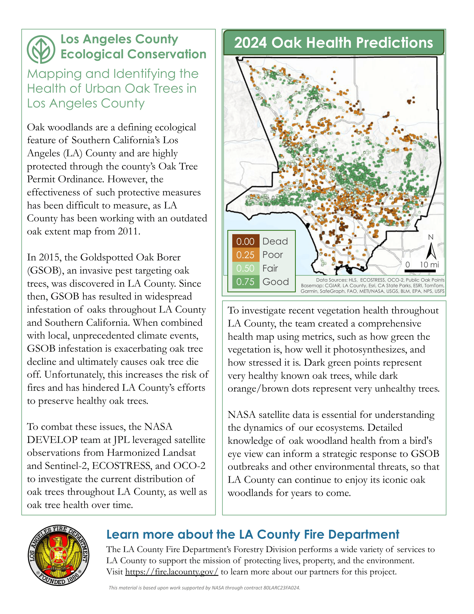
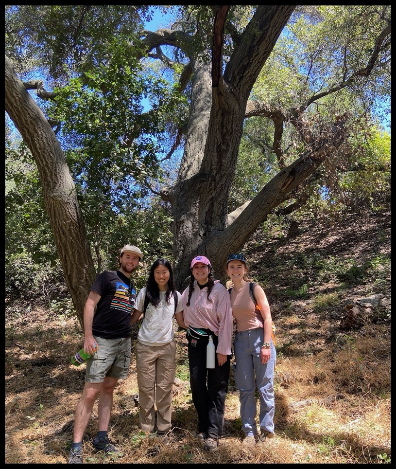

About the Project
In the summer of 2025, I had the opportunity to be a part of the NASA DEVELOP Los Angeles County Ecological Conservation Project. We partnered with the Los Angeles County Fire Department’s Forestry Division and the Department of Internal Services to address critical concerns regarding local oak trees. It was an honor working with such passionate and knowledgeable people while exploring new ways to assess oak tree and oak woodland health remotely. To learn more about current threats to oak trees and how our findings support local strategic land management tactics, explore the figures below or check out our presentation.
Project Overview
The Dangers Oak Trees Face and 2024 Oak Tree Health Predictions

Methodology Summary


Note: The technical report associated with this project is currently under internal review before it can be made public. This material is based upon work supported by NASA through contract 80LARC23FA024.
Citation
BibTeX citation:
@online{ingersoll2026,
author = {Ingersoll, Sofia},
title = {Understanding {Oak} {Tree} {Health} {Throughout} {Los}
{Angeles} {County}},
date = {2026-01-30},
url = {https://saingersoll.github.io/posts/LACEC_blog.html},
langid = {en}
}
For attribution, please cite this work as:
Ingersoll, Sofia. 2026. “Understanding Oak Tree Health Throughout
Los Angeles County.” January 30, 2026. https://saingersoll.github.io/posts/LACEC_blog.html.